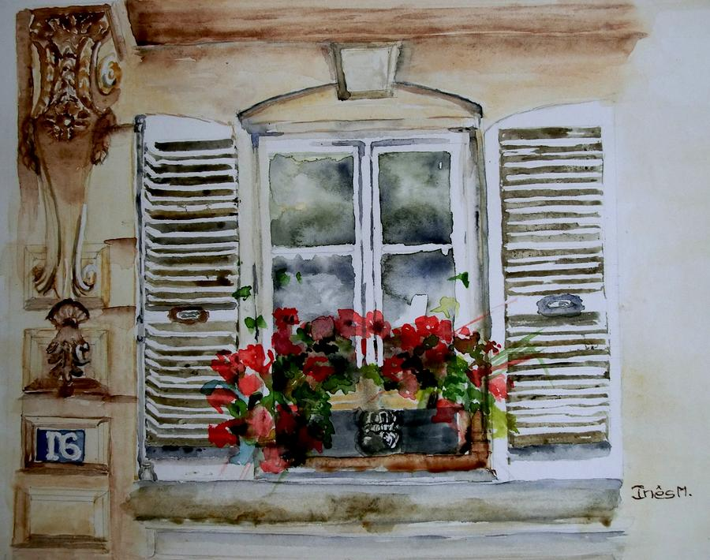

Nurssal d.o.o.
Vas pogled u svijet
O Nama

D.O.O. "Nurssal" je firma koja se bavi proizvodnjom i ugradnjom aluminijumske i PVC stolarije. Firma je osnovana 2005. godine i od tada uspjesno posluje na trzistu Crne Gore i regiona. Od samog pocetka radimo sa najkvalitetnijim profilima i pruzamo visokokvalitetne usluge ugradnje proizvoda. Zahvaljujuci tome firma Nurssal se od svojih pocetaka kontinuirano siri i zauzima sve veci udio na trzistu. Nasa politika je kvalitet ispred kvantiteta sto garantuje zadovoljstvo kupaca. Nasi partneri su svjetski poznati brendovi Gealan i Alumil.
Nudimo usluge proizvodnje i ugradnje:
- prozora svih oblika i dimanzija
- kliznih vrata i prozora
- balkonskih vrata
- garaznih vrata
- pregradnih zidova i panoa